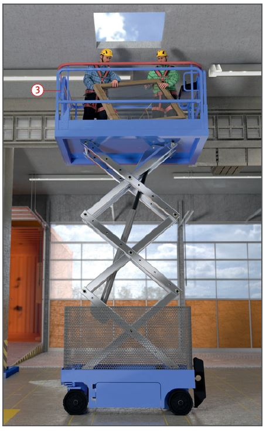

Umsturz der Hubarbeitsbühne, z. B. durch Einfahren in Bodenöffnungen oder Überfahren von Absätzen.
Absturz durch Herausschleudern oder beim Übersteigen z. B. durch Verlassen des Arbeitskorbes im angehobenen Zustand, Aufsteigen auf das Geländer, Hängenbleiben des Geländers an und unter Konstruktionen, Angefahren werden durch andere Fahrzeuge.
Quetschen z. B. Einquetschen zwischen Bedienpult bzw. Geländer der Hubarbeitsbühne und Teilen der Umgebung durch Fehlbedienung.
Schutzmaßnahmen
Aufstellung
Hubarbeitsbühne entsprechend der Betriebsanleitung standsicher aufstellen und betreiben .
Bei Aufstellung und Betrieb auf Quetsch- und Scherstellen achten.
Betrieb
Hubarbeitsbühne nicht überlasten.
Den Bereich unter seitlich ausgeschwenkten Arbeitsplattformen von Hubarbeitsbühnen sichern, wenn sie im Verkehrsbereich von Straßenfahrzeugen niedriger als 4,50 m über Gelände abgesenkt sind.
Bei Arbeiten im öffentlichen Straßenverkehr gelbe Blinkleuchten einschalten .
Arbeiten im Bereich Spannung
führender elektrischer Freileitungen
nur durchführen, wenn die
Hubarbeitsbühne entsprechend der Nennspannung, mindestens
aber für 1000 V, isoliert ist. Bei
diesen Arbeiten müssen sich
mindestens zwei Personen auf
der Arbeitsbühne aufhalten.
Klappbare Schutzgeländer vor Arbeitsbeginn in Schutzstellung bringen .
Vor und beim Betrieb auf einwandfreien Zustand und Wirksamkeit der Sicherheitseinrichtungen achten.
Beim Verfahren der Hubarbeitsbühne dürfen sich Beschäftigte nur auf der Arbeitsbühne aufhalten, wenn dies in der Betriebsanleitung beschrieben ist.
Die Notwendigkeit der Benutzung einer persönlichen Schutzausrüstung (PSA) gegen Absturz ergibt sich aus der Gefährdungsbeurteilung (Peitscheneffekt) und/oder aus den Vorgaben der Betriebsanleitung des Hubarbeitsbühnenherstellers.
Die Befestigung der PSA gegen Absturz hat an den vom Hersteller im Arbeitskorb vorgegebenen Anschlagpunkten zu erfolgen. Das Verbindungsmittel zwischen Auffanggurt und Anschlagpunkt sollte so kurz wie möglich gehalten werden, damit Personen nicht aus dem Arbeitskorb herausgeschleudert werden können.

Beschäftigungsbeschränkungen
Für die Bedienung von Hubarbeitsbühnen nur Personen einsetzen, die
mindestens 18 Jahre alt und zuverlässig sind,
sowohl in der Bedienung der entsprechenden Hubarbeitsbühne als auch über die mit ihrer Arbeit verbundenen Gefährdungen und Schutzmaßnahmen unterwiesen sind,
vom Unternehmer hierzu schriftlich beauftragt sind.
Im DGUV Grundsatz 308-008 "Ausbildung und Beauftragung der Bediener von Hubarbeitsbühnen" wird gezeigt wie die Bediener die notwendige Qualifikation erreichen können.
Prüfungen
Nur Hubarbeitsbühnen benutzen, die vor der ersten Inbetriebnahme von einem Sachverständigen geprüft wurden (siehe Prüfbescheinigung vor 01.01.1997) oder bei denen die CE-Kennzeichnung angebracht ist und die Konformitätserklärung vorliegt.
Art, Umfang und Fristen erforderlicher
Prüfungen festlegen
(Gefährdungsbeurteilung) und
einhalten, z. B.:
arbeitstäglich mit Funktionsproben,
mind. 1 x jährlich durch eine "zur Prüfung befähigte Person" (z. B. Sachkundiger).
Ergebnisse der regelmäßigen
Prüfung im Prüfbuch dokumentieren.